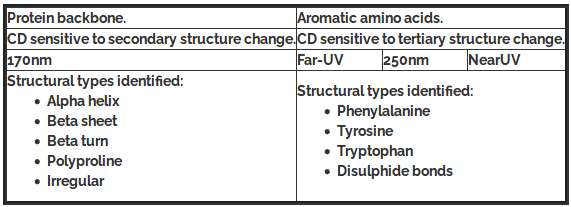
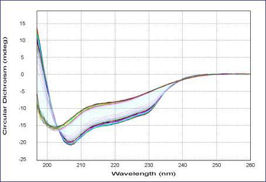

To Study the Thermal Stability of Proteins
Protein Folding - the process and its cause
Protein folding is the ultimate process where the information contained in genes is transformed into the final functional unit, an active folded protein from the unfolded primary amino acid sequence.
The amino-acid sequence (or primary structure) of a protein determines its native conformation. A protein molecule folds spontaneously during or after biosynthesis. For the most part, scientists have been able to study many identical molecules folding together en masse. At the coarsest level, it appears that in transitioning to the native state, a given amino acid sequence takes on roughly the same route and proceeds through roughly the same intermediates and transition states. Often folding involves first the establishment of regular secondary and super secondary structures, particularly alpha helices and beta sheets, and afterwards tertiary structure. Formation of quaternary structure usually involves the "assembly" or "coassembly" of subunits that have already folded. The regular alpha helix and beta sheet structures fold rapidly because they are stabilized by intramolecular hydrogen bonds, as was first characterized by Linus Pauling. Protein folding may involve covalent bonding in the form of disulfide bridges formed between two cysteine residues or the formation of metal clusters. Shortly before settling into their more energetically favorable native conformation, molecules may pass through an intermediate "molten globule" state.
Folding is a spontaneous process independent of energy inputs from nucleoside triphosphates. The passage of the folded state is mainly guided by hydrophobic interactions, formation of intramolecular hydrogen bonds, and van der Waals forces, and it is opposed by conformational entropy.
While these macromolecules may be regarded as "folding themselves", the process also depends on the solvent (water or lipid bilayer), the concentration of salts, the temperature, and the presence of molecular chaperones.
The essential fact of folding, however, remains that the amino acid sequence of each protein contains the information that specifies both the native structure and the pathway to attain that state. This is not to say that nearly identical amino acid sequences always fold similarly. Conformations differ based on environmental factors as well; similar proteins fold differently based on where they are found.
Motivation :
Misfolded proteins almost always fail to function correctly. Also excess misfolded protein can accumulate and interfere with the functioning of the cell. Consequently misfolded proteins are a feature of a large number of diseases, including Alzheimer's, Creutzfeldt-Jakob disease (CJD), cystic fibrosis, and many cancers. Understanding the difference in the folding process can bring insight into the causes of these diseases at the molecular level.
Secondary structure analysis by Circular Dichroism Spectroscopy
Circular Dichroism or CD Spectrocsopy measures the difference in absorption of right and left circularly polarized light. The difference arises if there is asymmetry present in a compact arrangement of chromophores that are within interacting distances. The typical chromophore in a protein or polypeptide is the peptide bond. The spatial juxtaposition of these peptide groups changes as a function of the backbone geometry. It is therefore expected that as the backbone conformation changes, the CD signal will also change. Therefore the CD spectra of polypeptides are highly sensitive to the overall conformation of a polypeptide chain.
CD values are measured as mean residue ellipticities in millidegree units and reported as MRE ([θ] = θ/10 n.l.c) where n is the number of peptide bonds, l is the cuvette pathlength in cm, c is the concentration in Molarity and θ is the observed ellipticity in mdeg. This normalizes concentration or number of peptide bond differences between two samples. The unit of [θ] is: deg.cm2.dmol-1.
Theoretical calculations suggest that the random coil conformation gives rise to a negative minimum < 200nm. β-sheet conformation is characterized by one negative band around 216 nm and a positive band around 197 nm. The α- helix gives rise to two negative bands (double minima), around 222nm (n-π*) and 208nm (π-π* parallel) with almost equal intensity. There is also a strong positive band at around 192nm (π-π* perpendicular).
Relationship between regions of the CD spectrum and protein structural types.

Changes in the circular dichroism spectra of bio-molecules represent changes in their secondary and tertiary structures. When this is coupled with the facts that (i) spectra can be recorded in minutes and (ii) single wavelength kinetics can be recorded from milliseconds onwards, it can be seen that CD is a particularly powerful tool to follow dynamic changes in protein structure. For instance, changes induced by changing temperature, pH, ligands, or denaturants are all commonly studied.
CD spectroscopy and its use to study thermal denaturation of protein:
Continuing from what we have learnt in experiment 6 and 7, the far UV region of a protein circular dichroism (CD) spectrum shows spectral features related to the structure of the backbone of the protein, and is directly relevant to the secondary structural elements that make up the protein structure. The spectral signatures can be used to predict the secondary structure makeup of a particular proteins structure as discussed in experiments 6 and 7. We can also similarly analyze the protein's secondary structure against temperature as the parameters as sighted below i.e. the process of thermal denaturation of protein with CD spectra.
Far-UV CD spectrum thermal denaturation of lysozyme
This picture is taken from the website of Applied Photophysics Ltd, 21 Mole Business Park, Leatherhead,Surrey KT22 7AG, United Kingdom
The above figure illustrates clearly the change in CD signature as a function of temperature. Comparison of known CD signatures with the data in this experiment suggests that the initial CD signature is a combination of α-helical and β-sheet structure which, on heating, loses much of its α-helical content to an unfolded state, whilst retaining some β-sheet character.
Protein Denaturation
Protein denaturation is commonly defined as any non covalent change in the structure of a protein. This change may alter the secondary, tertiary or quaternary structure of the molecules. When using this definition it should be noted that what constitutes denaturation is largely dependent upon the method utilized to observe the protein molecule. Some methods can detect very slight changes in structure while other requires rather large alterations in structure before changes are observed.
Mechanism of protein denaturation:
Denaturation of proteins involves the disruption and possible destruction of both the secondary and tertiary structures. Since denaturation reactions are not strong enough to break the peptide bonds, the primary structure (sequence of amino acids) remains the same after a denaturation process. Denaturation disrupts the normal alpha-helix and beta-sheets in a protein and uncoils it into a random shape.
How denaturation occurs at levels of protein structure:
- In quaternary structure denaturation, protein sub-units are dissociated and/or the spatial arrangement of protein subunits is disrupted.
- Tertiary structure denaturation involves the disruption of:
i. Covalent interactions between amino acid side-chains (such as disulfide bridges between cysteine groups)
ii. Noncovalent dipole-dipole interactions between polar amino acid side-chains (and the surrounding solvent)
iii. Van der Waals (induced dipole) interactions between nonpolar amino acid side-chains. - In secondary structure denaturation, proteins lose all regular repeating patterns such as alpha-helices and beta-pleated sheets, and adopt a random coil configuration.
- Primary structure, such as the sequence of amino acids held together by covalent peptide bonds, is not disrupted by denaturation.
Thermal Denaturation
Heat can be used to disrupt hydrogen bonds and non-polar hydrophobic interactions. This occurs because heat increases the kinetic energy and causes the molecules to vibrate so rapidly and violently that the bonds are disrupted. The proteins in eggs denature and coagulate during cooking. Other foods are cooked to denature the proteins to make it easier for enzymes to digest them. Medical supplies and instruments are sterilized by heating to denature proteins in bacteria and thus destroy the bacteria.
When proteins are exposed to increasing temperature, losses of solubility or enzymatic activity occurs over a fairly narrow range. Depending upon the protein studied and the severity of the heating, these changes may or may not be reversible.
Mechanism of thermal denaturation: Why proteins unfold at higher temperature?
As the temperature is increased, a number of bonds in the protein molecule are weakened. The first affected are the long range interactions that are necessary for the presence of tertiary structure. As these bonds are first weakened and are broken, the protein obtains a more flexible structure and the groups are exposed to solvent. If heating ceases at this stage the protein should be able to readily refold to the native structure. As heating continues, some of the cooperative hydrogen bonds that stabilize helical structure will begin to break. As these bonds are broken, water can interact with and form new hydrogen bonds with the amide nitrogen and carbonyl oxygens of the peptide bonds. The presence of water further weakens nearby hydrogen bonds by causing an increase in the effective dielectric constant near them. As the helical structure is broken, hydrophobic groups are exposed to the solvent.
The effect of exposure of new hydrogen bonding groups and of hydrophobic groups is to increase the amount of water bound by the protein molecules. The unfolding that occur increase the hydrodynamic radius of the molecule causing the viscosity of the solution to increase. The net result will be an attempt by the protein to minimize its free energy by burying as many hydrophobic groups while exposing as many polar groups as possible to the solvent. While this is analogous to what occurred when the protein folded originally, it is happening at a much higher temperature. This greatly weakens the short range interaction that initially direct protein folding and the structures that occur will often be vastly different from the native protein.
The increased water binding noted in the early stages of denaturation may be retained following hydrophobic aggregations. The loss of solubility that occurs will greatly reduce the viscosity to a level below that of the native proteins.
Under some conditions proteins will not fold into their biochemically functional forms. Temperatures above or below the range that cells tend to live in will cause thermally unstable proteins to unfold or "denature" (this is why boiling makes an egg white turn opaque). High concentrations of solutes, extremes of pH, mechanical forces, and the presence of chemical denaturants can do the same. Protein thermal stability is far from constant, however. For example, hyperthermophilic bacteria have been found that grow at temperatures as high as 122oC, which of course requires that their full complement of vital proteins and protein assemblies be stable at that temperature or above.
Exposure of most proteins to high temperatures results in irreversible denaturation. Some proteins, like caseins, however, contain little if any secondary structure and have managed to remove their hydrophobic groups from contact with the solvent without the need for extensive structure. This lack of secondary structure causes these proteins to be extremely resistant to thermal denaturation.
Thermal denaturation of protein (by circular dichroism):
This protocol is used to determine the stability of protein. The thermal denaturation of protein can be monitored by circular dichroism spectrum .As explained in this theory portion above, Circular dichroism is one of the most general and basic tools to study protein folding. Circular dichroism spectroscopy measures the absorption of circularly polarized light. In proteins, structures such as alpha helicies and beta sheets are chiral, and thus absorb such light. The absorption of this light acts as a marker of the degree of foldedness of the protein ensemble. This technique can be used to measure equilibrium unfolding of the protein by measuring the change in this absorption as a function of denaturant concentration or temperature. Usually, one wavelength (we use 222nm for our helical protein) is chosen to monitor. A denaturant melt measures the free energy of unfolding as well as the protein's Tm value.
Denaturation midpoint:
The transition midpoint (Tm) is the temperature where 50% of the protein is in its native conformation and the other 50% is in maximum denatured / unfolded conformation. The higher the Tm, the more stable is the molecule. In this experiment, it is determined by measuring a series of CD spectra of the protein at various temperatures, the transition temperature is usually taken as the point where 50% of the protein structure is in maximally unfolded state.
This type of spectroscopy can also be combined with fast-mixing devices, such as stopped flow, to measure protein folding kinetics and to generate chevron plots.In this experiment we will study the effect of temperature on protein denaturation using Rhodopsin as a model system.
RHODOPSIN
Rhodopsin, also known as visual purple, is a pigment of the retina that is responsible for both the formation of the photoreceptor cells and the first events in the perception of light. Rhodopsins belong to the G-protein coupled receptor family and are extremely sensitive to light, enabling vision in low-light conditions. Exposed to light, the pigment immediately photobleaches, and it takes about 30 minutes to regenerate fully in humans.
Property
Proteins interact with other molecules---substrates, inhibitors, ions, nucleic acids, carbohydrates, lipids, and other proteins--as ways in which they carry out their various functions. By the time rhodopsin reaches its membrane location in the outer segment, it has already interacted with dozens of proteins involved in such activities as its biosynthesis, acetylation, glycosylation, and transport. It has bound two molecules of palmitate and one molecule of 11-cis retinal and has become embedded in a membrane lipid bilayer. Rhodopsin is now ready to carry out its role in phototransduction.
After photoactivation, rhodopsin exerts its effect on rod cell biochemistry by interacting with rod cell proteins through its cytoplasmic surface. As described previously, photoactivated rhodopsin (R*) binds and activates the G-protein, transducin, initiating the phototransduction cascade. R* is then phosphorylated by rhodopsin kinase, and the resulting R*P is bound by arrestin, preventing further activation of transducin. Thus, rhodopsin interacts with three major proteins---transducin, rhodopsin kinase, and arrestin--and is then dephosphorylated by a phosphatase, as part of its functional cycle.
Importance
Mutation of the rhodopsin gene is a major contributor to various retinopathies such as retinitis pigmentosa . The disease-causing protein generally aggregates with ubiquitin in inclusion bodies, disrupts the intermediate filament network and impairs the ability of the cell to degrade non-functioning proteins which leads to photoreceptor apoptosis.
Structure
Rhodopsin consists of the protein moiety opsin and a reversibly covalently bound cofactor, retinal. Opsin, a bundle of seven transmembrane helices connected to each other by protein loops, binds retinal (a photoreactive chromophore), which is located in a central pocket on the seventh helix at a lysine residue. Retinal lies horizontally with relation to the membrane. Each outer segment disc contains thousands of visual pigment molecules. About half the opsin is within the lipid bilayer. Retinal is produced in the retina from Vitamin A, from dietary beta-carotene. Isomerization of 11-cis-retinal into all-trans-retinal by light induces a conformational change (bleaching) in opsin continuing with metarhodopsin II, which activates the associated G protein transducin and triggers a second messenger cascade.
The structure of rhodopsin has been studied in detail via x-ray crystallography on rhodopsin crystals. Several models (e.g. the bicycle-pedal mechanism, hula-twist mechanism) attempt to explain how the retinal group can change its conformation without clashing with the enveloping rhodopsin protein pocket.
Recent data supports that it is a functional monomer as opposed to a dimer, which was the paradigm of G-coupled protein receptors for many years.